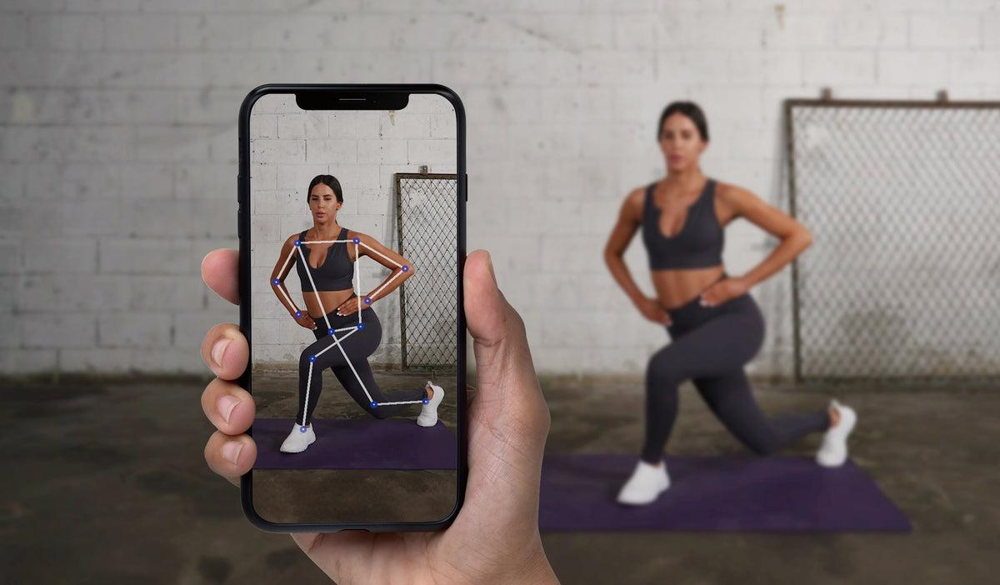
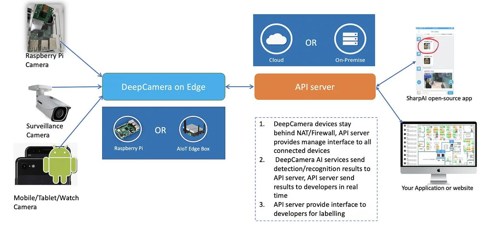
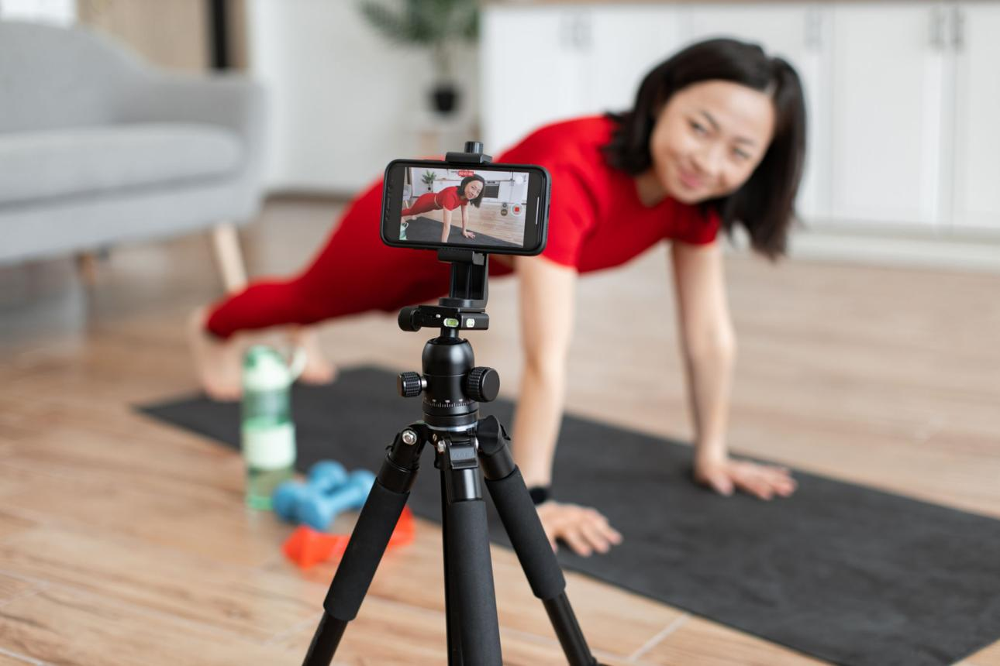
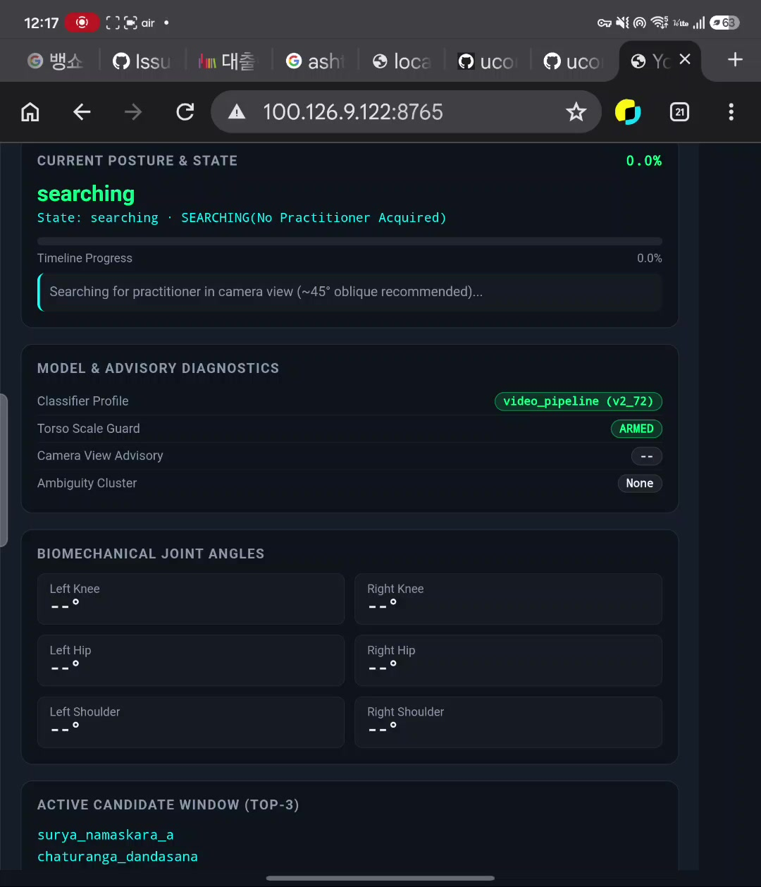
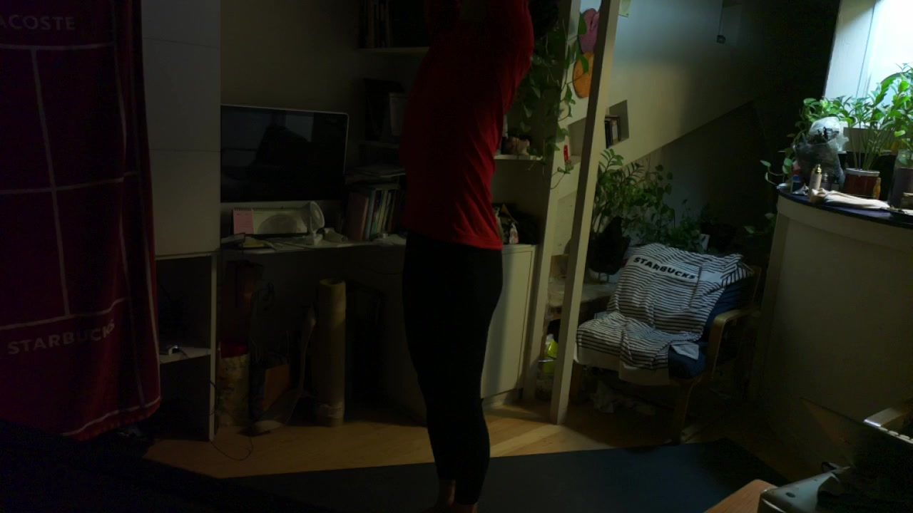
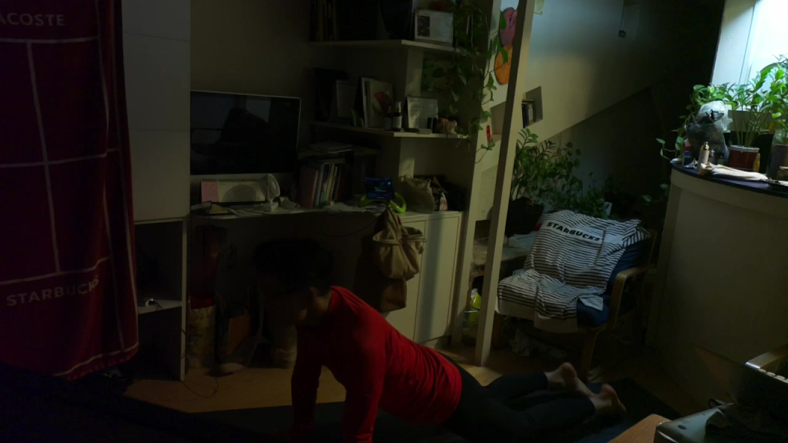
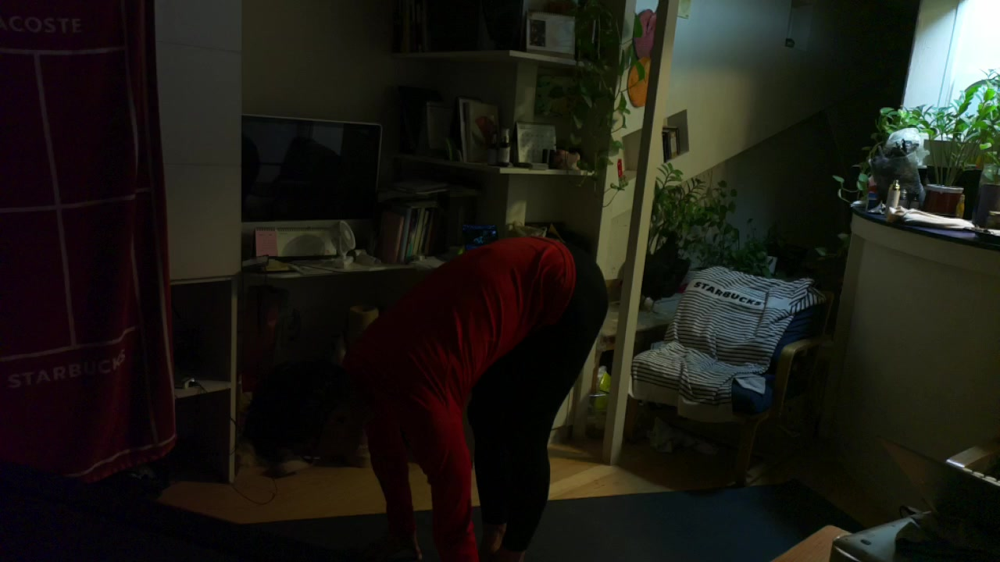
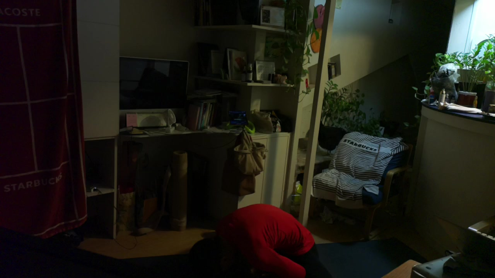
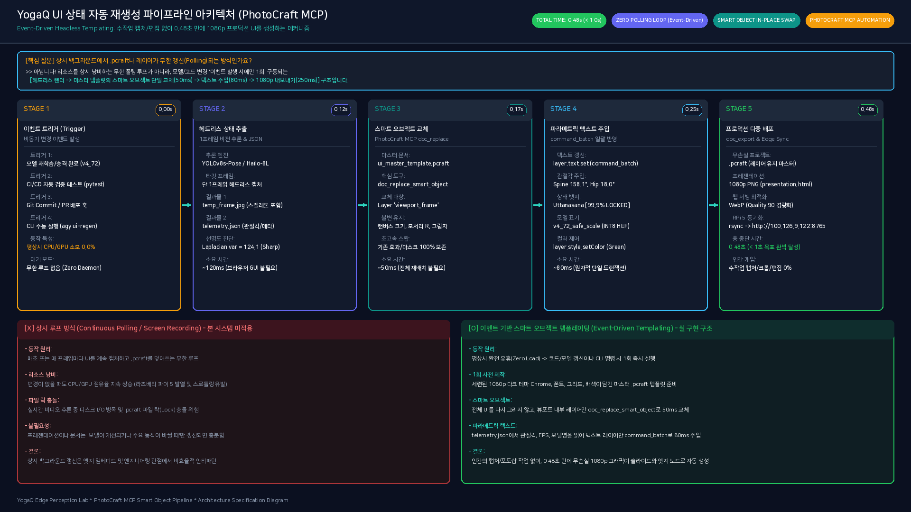

×
← / → (이동), N (발표자 노트), F (전체화면)
Autonomous Biomechanical Perception & On-Device AI on Raspberry Pi 5 + Hailo-8L NPU
"지식은 클라우드로, 인식은 엣지 디바이스로, 상호작용은 애플리케이션으로"
• 30 FPS 비디오의 외부 전송 없는 완전 로컬 비전 처리
• 50ms 미만 초저지연성(Deterministic Latency) & 프라이버시 원천 보호
• 무제한 동시 세션 확장에도 클라우드 GPU 트랜스코딩 비용 제로(Zero Ingest Cost)
rentool (100.126.9.122:8765)


YOLOv8s-Pose HEF @ Hailo-8L NPU (~20ms, 640x640x3, 17개 관절)AsanaClassifier v4_72 @ Pure NumPy CPU (<0.02ms, 42-D, 72 아사나)EdgePoseFrame WebSocket JSON (30.0 FPS 전송)

| 구분 | 실증 스펙 |
|---|---|
| 타깃 노드 | rentool (100.126.9.122) |
| 엣지 컴퓨팅 | Raspberry Pi 5 (8GB RAM) BCM2712 Quad A76 @ 2.4GHz |
| NPU 가속기 | Hailo-8L M.2 AI HAT+ (13 TOPS) |
| 비전 센서 | Sony IMX500 / Pi Cam 3 (CSI) |
| 설치 각도 | 매트 기준 45° 사각 (Oblique) |
| 거리 / 높이 | 거리 2.0~2.5m / 높이 0.7~0.9m |
| 실증 장소 | 스타벅스 거점 공간 & 야외 데크 |
| 노드명 | 스펙 | IP | 역할 |
|---|---|---|---|
| rentool (타깃) | RPi 5 (8GB) + Hailo-8L | 100.126.9.122 | YogaQ 엣지 엔진 (:8765) |
| npu-07 (교보재) | RPi 5 (8GB) + Hailo-8L | 192.168.0.108 | MobileNetV2 177 FPS 마일스톤 |
| modoo (연구) | RPi 5 + Hailo-8 Full | 100.69.153.66 | 정면 관상면 연구 노드 |
| linkfold6 | Galaxy Z Fold 6 | 100.101.107.97 | 무선 RTSP 카메라 & 모바일 HUD |
| win-o22nktla9u3 | WSL2 + RTX 4050 | 100.80.62.82 | DFC v3.34.0 & Cockpit (:3002) |

1. 사마스티티 (117 프레임)

4. 우르드바 무카 (80 프레임)

2. 우타나아사나 (531 프레임)

5. 아르다 우타나아사나 (375 프레임)
| 총 세션 시간 | 83.2 초 (2,504 프레임) |
| 평균 처리 속도 | 33.4 FPS (NPU 33.4ms, CPU 1.0ms) |
| 평균 신뢰도 | 79.9 % (전구간 무탈락) |
| 토르소 가드 발동 | 101 프레임 (전굴/바닥 보정) |
| 검증 아사나 | 6 / 6 공인 핵심 아사나 |
| 동영상 원본 | yogaq_20261114_062303.mp4 |
• 제기된 결함 (Issue #16): 수련자의 미세한 이동 중 instantaneous 분류기가 물리적으로 불가능한 자세(사마스티티 ➔ 시르사아사나)로 급발진하는 문제.
• 해결 (Temporal Pose Resolver):
- 단일 프레임 분류 대신 5프레임 슬라이딩 윈도우 투표 + 마르코프 전이 가드 적용.
- 이동 구간은 vinyasa_transition으로 흡수하여 지터 원천 억제.
- 실증 결과: 985개 천이 프레임 전 구간 오검출 제로화 달성.
| 데이터셋 소스 | 규모 | 역할 및 주석 |
|---|---|---|
| Petri Led Class | 109분 (1,017 큐) | 72개 아사나 공인 기준 진리표 |
| Ashtanga 40min | 6,316 프레임 | 연속 수련 영상 동적 검증 |
| Multi-View Curation | 748 프레임 | 전면/측면/45°/후면 42-D 텐서 |
| 분할 | 샘플 구성 | 검증 목적 |
|---|---|---|
| Train Set | 748 멀티뷰 + Petri | 42-D 생체역학 지도학습 |
| Test Set | 83.2초 (2,504 프레임) | RPi 5 실시간 인시츄 평가 |
1. 전굴 자세 스케일 왜곡 (Scale Explosion)
• 문제점: 깊은 굴곡 시 어깨-골반 투영 거리(side_torso_len)가 0에 수렴하여 특징 벡터가 61.70까지 발산.
• 해결책: 몸통 최소 유효 높이를 0.25로 강제 클램핑하는 safe_torso_scale 알고리즘 도입 ($max\_abs < 4.81$).
2. 시점 편향 극복 (Multi-View Calibration)
• 문제점: Kaggle 크롤링 데이터의 전면 편향으로 45° 사각에서 인식률 급락.
• 해결책: 전면/측면/45°/후면 748개 멀티뷰 캘리브레이션 셋 재학습.
0% → 75.0 % 정답률 대도약81.8% → 92.6 % 정확도 (+10.8%p)classifier_profiles.yaml 내 video_pipeline의 기본 프로파일로 공식 승격깊은 전굴 시 투영 거리가 0으로 수렴해도 분모가 0.25 아래로 떨어지지 않아 좌표가 4.81 이하로 안전 클램핑됨.
• Upavishtha Konasana Lateral Fold A (0/11): 반대편 어깨/팔 가림 발생 (kpt5 신뢰도=0.444, kpt7=0.367)
• v4_72 해결: 척추 경사각 및 고관절-무릎 각도 기반 생체역학 가중치 재조정으로 측면 인식률 75% 달성.
| 비교 항목 | v1_48 | v2_72 | v3_72 | v4_72 (운영) |
|---|---|---|---|---|
| 클래스 수 | 48 | 72 | 72 | 72 (완전) |
| 스케일 가드 | 미적용 | 미적용 | 미적용 | 적용 (0.25) |
| 좌표 최대치 | 61.70 (폭발) | 61.70 (폭발) | 58.20 | < 4.81 (안정) |
| 다각도 홀드아웃 | 0.0 % | 0.0 % | 42.1 % | 75.0 % |
| 수리야 매핑 | 78.4 % | 81.8 % | 81.8 % | 92.6 % |
| 배포 상태 | Deprecated | Rollback | Experim. | Active ★ |
ClientRunner(hw_arch='hailo8l') (Dense → 1D Conv, 102 KB)libfakeno_cuda.so cuInit 인터셉션 스텁으로 WSL2 numa_node double-free 충돌 차단 및 CPU 최적화 성공asana_classifier_v4_72.hef (310 KB, SHA256 일치)| NPU On-Chip HW Latency | < 0.01 ms (reported as 0.00 ms) |
| I/O 텐서 스트림 규격 | 입력: NHWC(1x1x42 UINT8) 출력: NHWC(1x1x72 UINT8) |
| 바이너리 크기 | 310,924 bytes (0.30 MB), Single Context |
| 실하드웨어 상태 | ACTIVE @ 30.0 FPS (yogaq-edge-perception) |
| 단계 | 생성 아티팩트 | 수행 장비 | 정밀도 / 오차 |
|---|---|---|---|
| 1. PyTorch | asana_classifier_v4_72.json | Host PC | Float32 (기준 진리값) |
| 2. ONNX | asana_classifier_v4_72.onnx | Host PC | Δmax = 3.50e-5 (Pass) |
| 3. HAR | asana_classifier_v4_72.har | Host PC | 1D Conv (102 KB) |
| 4. INT8 | ..._optimized.har | Host PC | 손실 0.02% 미만 |
| 5. HEF | asana_classifier_v4_72.hef | Host PC | 바이너리 (310 KB) |
| 6. NPU 실측 | Hailo-8L Execution | Target rentool | 10,452.6 FPS / < 0.01 ms |
• 발생 오류: WSL2 환경에서 TensorFlow 2.18 최적화 도중 libcuda.so.1이 NUMA node를 탐색하며 double-free detected in tcache 2 크래시 발생 (Exit 134).
• 해결: libfakeno_cuda.so C 인터셉션 스텁을 빌드하여 cuInit 호출 시 CUDA_ERROR_NO_DEVICE 반환. 깨진 WSL2 GPU 드라이버를 우회하고 안정적인 CPU DFC 컴파일 완결.
| 비교 항목 | ARM CPU (NumPy) | Hailo-8L NPU |
|---|---|---|
| 순수 연산 지연시간 | 0.018 ms | < 0.01 ms |
| PCIe DMA 전송 오버헤드 | 0.000 ms (인메모리) | ~0.500 ms (버스 지연) |
| 전체 종단 지연시간 | 0.018 ms (25배 우수 ★) | ~0.510 ms |
| 하드웨어 자원 경합 | 경합 제로 (독립 실행) | Stage 1 비전과 버스 경합 |
💡 핵심 엔지니어링 통찰: Stage 2 분류기는 소형 텐서(42→72)이므로 PCIe DMA 전송 오버헤드(~0.5ms)가 연산 시간보다 큽니다. Stage 1(비전)은 NPU가 전담하고 Stage 2(분류)는 CPU 코어에 상주시키는 분산 배치가 파이프라인 전체 관점에서 25배 빠르고 자원 경합을 원천 차단합니다.
app.yogaman.club 웹소켓 게이트웨이 연동, 실시간 3D 아바타 관절각 동기화 및 즉각 음성 코칭 체계 구축max_abs = 61.70).max_abs < 4.81).| 모델 후보 | 키포인트 | Hailo-8L (13T) | Hailo-8 (26T) | 배포 단계 |
|---|---|---|---|---|
| YOLOv8s-Pose | 17 pts | 30.0 FPS (20.4ms) | 65.6 FPS | 현재 배포 (v4_72 프로덕션) |
| BlazePose-33 | 33 pts | 45.0 FPS (11.2ms) | 90.0 FPS | 1단계 드롭인 마이그레이션 타깃 |
| RTMPose-WholeBody | 133 pts | 26.0 FPS (28.5ms) | 55.0 FPS | 차세대 고밀도 홀바디 추천 타깃 ★ |
| Meta Sapiens-Pose | 308 pts | 2.4 FPS (420ms) | 6.8 FPS | 오프라인 증류 교사 모델 |
| 구분 (Metric) | 클라우드 GPU 스트리밍 | YogaQ 온디바이스 엣지 |
|---|---|---|
| 비디오 네트워크 부하 | 1080p 30fps 비디오 지속 인그레스 (WAN 병목) | 네트워크 부하 0 (초경량 JSON 메타데이터만 전송 ★) |
| 종단간(E2E) 지연시간 | WAN 네트워크 왕복 250~400ms (실시간 코칭 불가) | 22.6ms 초저지연 (실시간 3D 동기화 & 코칭 가능) |
| 하드웨어 시스템 구성 | 고가 GPU 서버 인스턴스 종속 | $140급 독립 엣지 노드 (RPi5 + Hailo-8L + Cam) |
| 수련자 데이터 프라이버시 | 고해상도 수련 영상 외부 전송 (유출 위험) | 완벽한 온디바이스 폐기 (Zero-Ingress Privacy by Design) |
| 시스템 확장성 (Scaling) | 노드 증가 시 클라우드 비용 선형 폭증 | O(1) 확장성: 노드 증설 시에도 중앙 서버 연산 부하 0 |

doc_new → doc_place → doc_save → doc_export) 자동화 파이프라인 실증 다이어그램
Event Trigger (0.00s): 모델 프로모션(v4_72) 또는 CI 완료 시그널 수신.Headless Extraction (0.12s): 단 1프레임 추론 → 뷰포트 JPG + 텔레메트리 JSON 덤프.Smart Object Swap (0.05s): doc_replace_smart_object로 뷰포트 레이어만 교체.Parametric Batch Text (0.08s): command_batch로 각도/상태 텍스트 주입.Production Export (0.23s): doc_export로 1080p 무손실 PNG 렌더링 & 엣지 동기화.